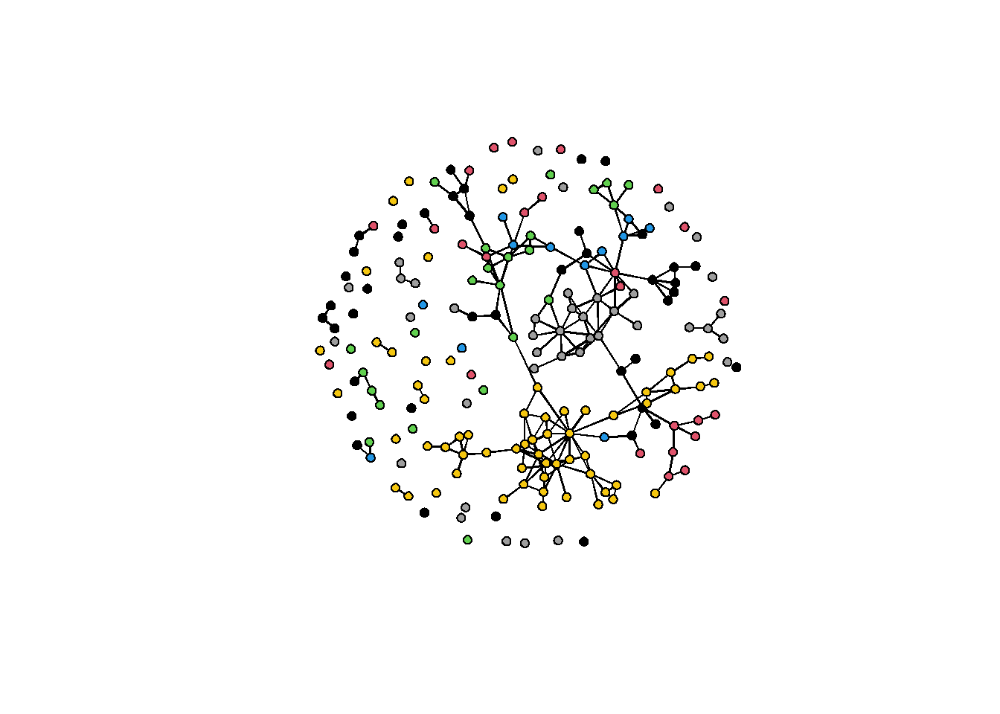

#install.packages("ergm.ego")
library(ergm.ego)## Warning: package 'ergm.ego' was built under R version 4.3.3## Loading required package: ergm## Loading required package: network## Warning: package 'network' was built under R version 4.3.3##
## 'network' 1.18.2 (2023-12-04), part of the Statnet Project
## * 'news(package="network")' for changes since last version
## * 'citation("network")' for citation information
## * 'https://statnet.org' for help, support, and other information##
## 'ergm' 4.5.0 (2023-05-27), part of the Statnet Project
## * 'news(package="ergm")' for changes since last version
## * 'citation("ergm")' for citation information
## * 'https://statnet.org' for help, support, and other information## 'ergm' 4 is a major update that introduces some backwards-incompatible changes. Please
## type 'news(package="ergm")' for a list of major changes.## Loading required package: egor## Warning: package 'egor' was built under R version 4.3.3##
## 'ergm.ego' 1.1.0 (2023-05-30), part of the Statnet Project
## * 'news(package="ergm.ego")' for changes since last version
## * 'citation("ergm.ego")' for citation information
## * 'https://statnet.org' for help, support, and other information##
## Attaching package: 'ergm.ego'## The following objects are masked from 'package:ergm':
##
## COLLAPSE_SMALLEST, snctrl## The following object is masked from 'package:base':
##
## sample#library(help='ergm.ego')data(faux.mesa.high)
mesa <- faux.mesa.high
rm(faux.mesa.high)
plot(mesa, vertex.col="Grade")
mesa.ego <- as.egor(mesa)
names(mesa.ego)## [1] "ego" "alter" "aatie"print(mesa.ego)## # EGO data (active): 205 × 4
## .egoID Grade Race Sex
## * <int> <dbl> <chr> <chr>
## 1 1 7 Hisp F
## 2 2 7 Hisp F
## 3 3 11 NatAm M
## 4 4 8 Hisp M
## 5 5 10 White F
## # ℹ 200 more rows
## # ALTER data: 406 × 5
## .altID .egoID Grade Race Sex
## * <int> <int> <dbl> <chr> <chr>
## 1 174 1 7 Hisp F
## 2 161 1 7 Hisp F
## 3 151 1 7 Hisp F
## # ℹ 403 more rows
## # AATIE data: 372 × 3
## .egoID .srcID .tgtID
## * <int> <int> <int>
## 1 1 151 127
## 2 1 127 52
## 3 1 127 87
## # ℹ 369 more rowsclass(mesa.ego)## [1] "egor" "list"class(mesa.ego$ego)## [1] "tbl_df" "tbl" "data.frame"print(mesa.ego$ego)## # A tibble: 205 × 4
## .egoID Grade Race Sex
## <int> <dbl> <chr> <chr>
## 1 1 7 Hisp F
## 2 2 7 Hisp F
## 3 3 11 NatAm M
## 4 4 8 Hisp M
## 5 5 10 White F
## 6 6 10 Hisp F
## 7 7 8 NatAm M
## 8 8 11 NatAm M
## 9 9 9 White M
## 10 10 9 NatAm F
## # ℹ 195 more rowsCopyright © Rob Franken